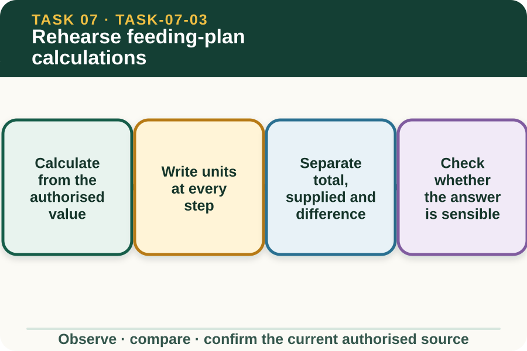

Learning purpose
Use fictional quantities to practise units, totals, checks and recording without creating a real ration.
Task 7 · Lesson 3 of 4
Use fictional quantities to practise units, totals, checks and recording without creating a real ration.
Learning purpose
Use fictional quantities to practise units, totals, checks and recording without creating a real ration.
Success criteria
Learning boundary
Supplementary learning and formative practice only. Current RTO assessment, local procedures and authorised supervision control real work.

Numeracy in AHCLSK229 supports measuring and recording weights and volumes. In real work, every input quantity and unit comes from the current approved feeding plan rather than a learner calculation or website example.
The arithmetic task is to reproduce and check a plan value accurately, not decide whether that value suits the livestock. If the source is missing or ambiguous, the calculation stops for clarification.
A number without its unit cannot be checked reliably. Record whether the source uses kilograms, litres, containers, groups, stations or another authorised measure, and keep that unit beside intermediate and final values.
Do not convert between weight and volume unless the approved source supplies the required relationship. Similar-looking units can represent different quantities and must not be treated as interchangeable.
A planning worksheet can distinguish the authorised planned total, the amount recorded as supplied and the difference between them. A difference does not automatically mean underfeeding, waste or error.
It is evidence requiring authorised review alongside timing, storage, leftovers, changes and record accuracy. The learner reports the values and does not independently compensate during a later task.
A reasonableness check asks whether the operation, unit and scale match the source. Estimation can reveal a misplaced decimal, wrong operation or total that conflicts with the stated number of fictional stations.
Reasonableness does not authorise correction of a controlled plan. If a result appears inconsistent, show the calculation and ask the supervisor to verify the source and intended operation.
Fictional worked example
Fictional worksheet: Training Plan F states that four practice stations each receive 12 kilograms of inert training material, so Meena writes 4 stations × 12 kilograms per station = 48 kilograms. The practice supply record shows 46 kilograms. Decision and reason: The arithmetic difference is 2 kilograms, but Meena cannot call it a livestock shortfall or alter any real feed amount because the example is not a ration and the record context is incomplete. Safe action: She labels both values and the difference. Result: The teacher reviews the calculation. Next check or record: Meena checks that every figure retains its unit and source label.
Rounding can change a total across several groups or containers. The authorised plan or workplace procedure must say the required precision and whether an intermediate value is rounded.
In a fictional exercise, keep the unrounded value visible and state the rounding rule supplied in the question. Never invent a practical tolerance or feed adjustment.
A checkable calculation shows the source values, operation, units, result and comparison. This lets a second person find whether the source, transcription or arithmetic caused a discrepancy.
Website calculations are formative numeracy practice using inert fictional materials. They do not formulate a ration, authorise livestock feeding, create workplace instructions or satisfy practical assessment evidence requirements.
Formative practice
Each option explains the consequence. These answers save only on this device.
Written application
Apply and keep a learning record
Complete three calculations using fictional inert training material. Retain units, show working and flag one unreasonable result for teacher review. Do not use livestock requirements or propose any feed quantity.
Learning record: A supplementary numeracy sheet with transparent working, unit checks and an authorised-verification note.
Lesson responses and the activity are formative learning only. Formal sufficiency and competence remain with the current RTO process.
Source basis: AHCLSK229 Release 1 foundation numeracy for measuring and recording feed weights and volumes, applied only to fictional inert-material calculations. The current approved feeding plan and supervisor control all real quantities, rates, conversions and adjustments.